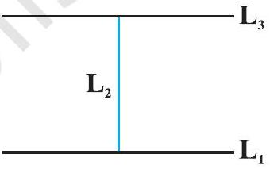
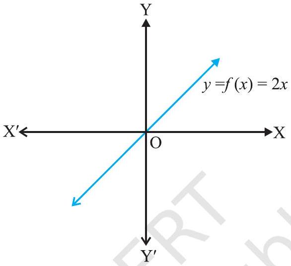
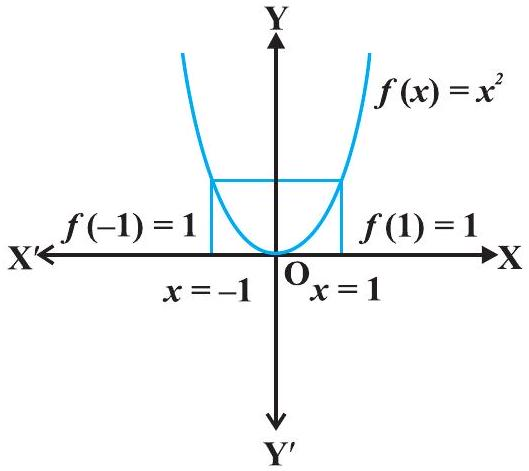

Relations and Functions
Chapter 1 · All Questions and Complete Solutions
Part 1 · Examples
Q
1.1
Empty and universal relations
Let A be the set of all students of a boys school.
Show that the relation R in A given by R = {(a, b): a is sister of b} is the empty relation and R′ = {(a, b): the difference between heights of a and b is less than 3 meters} is the universal relation.
Conclusion
Since the school is boys school, no student of the school can be sister of any student of the school.
Hence, R = φ, showing that R is the empty relation.
It is also obvious that the difference between heights of any two students of the school has to be less than 3 meters.
This shows that R′ = A × A is the universal relation.
Q
1.2
Equivalence relation - congruent triangles
Let T be the set of all triangles in a plane with R a relation in T given by R = {(T1, T2): T1 is congruent to T2}.
Show that R is an equivalence relation.
Conclusion
R is reflexive, since every triangle is congruent to itself.
Further, (T1, T2) ∈ R ⇒ T1 is congruent to T2 ⇒ T2 is congruent to T1 ⇒( T2, T1) ∈ R.
Hence, R is symmetric.
Moreover, (T1, T2),(T2, T3) ∈ R ⇒ T1 is congruent to T2 and T2 is congruent to T3 ⇒ T1 is congruent to T3 ⇒( T1, T3) ∈ R.
Therefore, R is an equivalence relation.
Q
1.3
Symmetric but not equivalence - perpendicular lines
Let L be the set of all lines in a plane and R be the relation in L defined as R = {(L1, L2): L1 is perpendicular to L2}.
Show that R is symmetric but neither reflexive nor transitive.

Given
R is not reflexive, as a line L1 can not be perpendicular to itself, i.e., ( L1, L1 ) ∉ R.
R is symmetric as (L1, L2) ∈ R
Key formula
⇒ L1 is perpendicular to L2⇒ L2 is perpendicular to L1⇒ ( L2, L1) ∈ R .
Conclusion
R is not transitive.
Indeed, if L1 is perpendicular to L2 and
Fig 1.1
L2 is perpendicular to L3, then L1 can never be perpendicular to L3.
In fact, L1 is parallel to L3, i.e., (L1, L2) ∈ R,(L2, L3) ∈ R but (L1, L3) ∉ R.
Q
1.4
Reflexive but not equivalence relation
Show that the relation R in the set {1,2,3} given by R = {(1,1),(2,2), (3,3),(1,2),(2,3)} is reflexive but neither symmetric nor transitive.
Conclusion
R is reflexive, since (1,1),(2,2) and (3,3) lie in R.
Also, R is not symmetric, as (1,2) ∈ R but (2,1) ∉ R.
Similarly, R is not transitive, as (1,2) ∈ R and (2,3) ∈ R but (1,3) ∉ R.
Q
1.5
Equivalence relation - divisibility by 2
Show that the relation R in the set Z of integers given by
R = {(a, b): 2 divides a-b}
is an equivalence relation.
Conclusion
R is reflexive, as 2 divides (a-a) for all a ∈ Z.
Further, if (a, b) ∈ R, then 2 divides a-b.
Therefore, 2 divides b-a.
Hence, (b, a) ∈ R, which shows that R is symmetric.
Similarly, if (a, b) ∈ R and (b, c) ∈ R, then a-b and b-c are divisible by 2. Now, a-c = (a-b)+(b-c) is even (Why?
).
So, (a-c) is divisible by 2 .
This shows that R is transitive.
Thus, R is an equivalence relation in Z.
Q
1.6
Equivalence relation - odd/even parity
Let R be the relation defined in the set A = {1,2,3,4,5,6,7} by R = {(a, b): both a and b are either odd or even }.
Show that R is an equivalence relation.
Further, show that all the elements of the subset {1,3,5,7} are related to each other and all the elements of the subset {2, 4, 6} are related to each other, but no element of the subset {1, 3, 5, 7} is related to any element of the subset {2, 4, 6}.
Given
Take any element a in A.
Both a and a must be either odd or even, so (a, a) ∈ R.
Substitute
Next, if (a, b) ∈ R ⇒ then both a and b must be either odd or even, so ⇒(b, a) ∈ R.
Similarly, if (a, b) ∈ R and (b, c) ∈ R ⇒ then all elements a, b, c must be either even or odd at the same time, so ⇒(a, c) ∈ R.
Hence, R is an equivalence relation.
Conclusion
All elements of {1,3,5,7} are related to each other, since they are all odd.
In the same way, all elements of the subset {2, 4, 6} are related to each other, since they are all even.
No element of {1, 3, 5, 7} is related to any element of {2, 4, 6}, because elements of {1, 3, 5, 7} are odd while elements of {2, 4, 6} are even.
Q
1.7
One-one but not onto - roll numbers
Let A be the set of all 50 students of Class X in a school.
Let f: A → N be function defined by f(x) = roll number of the student x.
Show that f is one-one but not onto.
Conclusion
No two different students of the class can have same roll number.
Therefore, f must be one-one.
We can assume without any loss of generality that roll numbers of students are from 1 to 50 .
This implies that 51 in N is not roll number of any student of the class, so that 51 can not be image of any element of X under f.
Hence, f is not onto.
Q
1.8
One-one but not onto - f(x)=2x on N
Show that the function f: N → N, given by f(x) = 2 x, is one-one but not onto.
Conclusion
The function f is one-one, for f(x1) = f(x2) ⇒ 2 x1 = 2 x2 ⇒ x1 = x2.
Further, f is not onto, as for 1 ∈ N, there does not exist any x in N such that f(x) = 2 x = 1.
Q
1.9
Bijective function - f(x)=2x on R
Prove that the function f: R → R, given by f(x) = 2 x, is one-one and onto.

Conclusion
f is one-one, as f(x1) = f(x2) ⇒ 2 x1 = 2 x2 ⇒ x1 = x2.
Also, given any real number y in R, there exists y2 in R such that f(y2) = 2 .(y2) = y.
Hence, f is onto.
Fig 1.3
Q
1.10
Onto but not one-one function
Show that the function f: N → N, given by f(1) = f(2) = 1 and f(x) = x-1, for every x>2, is onto but not one-one.
Conclusion
f is not one-one, as f(1) = f(2) = 1.
But f is onto, as given any y ∈ N, y ≠ 1, we can choose x as y+1 such that f(y+1) = y+1-1 = y.
Also for 1 ∈ N, we have f(1) = 1.
Q
1.11
Neither one-one nor onto - f(x)=x^2
Show that the function f: R → R, defined as f(x) = x2, is neither one-one nor onto.
Conclusion
Since f(-1) = 1 = f(1), f is not oneone.
Also, the element - 2 in the co-domain R is not image of any element x in the domain R (Why?
).
Therefore f is not onto.
Q
1.12
Bijective piecewise function
Show that f: N → N, given by
x+1, if x is odd, x-1, if x is even
is both one-one and onto.
The image of 1 and -1 under f is 1.
Fig 1.4

Conclusion
Suppose f(x1) = f(x2).
If x1 is odd and x2 is even, then x1+1 = x2-1, i.e., x2-x1 = 2, which is impossible.
In the same way, x1 being even and x2 being odd can also be ruled out, by a similar argument.
So both x1 and x2 must be either odd or even.
Suppose both x1 and x2 are odd.
Then f(x1) = f(x2) ⇒ x1+1 = x2+1 ⇒ x1 = x2.
Suppose instead both x1 and x2 are even.
Then also f(x1) = f(x2) ⇒ x1-1 = x2-1 ⇒ x1 = x2.
So f is one-one.
Also, any odd number 2 r+1 in the co-domain N is the image of 2 r+2 in the domain N, and any even number 2 r in the co-domain N is the image of 2 r-1 in the domain N.
So f is onto.
Q
1.13
Onto implies one-one on finite set
Show that an onto function f:{1,2,3} →{1,2,3} is always one-one.
Conclusion
Suppose f is not one-one.
Then there exists two elements, say 1 and 2 in the domain whose image in the co-domain is same.
Also, the image of 3 under f can be only one element.
Therefore, the range set can have at the most two elements of the co-domain {1,2,3}, showing that f is not onto, a contradiction.
Hence, f must be one-one.
Q
1.14
One-one implies onto on finite set
Show that a one-one function f:{1,2,3} →{1,2,3} must be onto.
Conclusion
Since f is one-one, three elements of {1,2,3} must be taken to 3 different elements of the co-domain {1,2,3} under f.
Hence, f has to be onto.
Q
1.15
Composition of finite functions
Let f:{2,3,4,5} →{3,4,5,9} and g:{3,4,5,9} →{7,11,15} be functions defined as f(2) = 3, f(3) = 4, f(4) = f(5) = 5 and g(3) = g(4) = 7 and g(5) = g(9) = 11.
Find g o f.
Conclusion
We have gof(2) = g(f(2)) = g(3) = 7, gof(3) = g(f(3)) = g(4) = 7, gof(4) = g(f(4)) = g(5) = 11 and gof(5) = g(5) = 11.
Q
1.16
gof not equal to fog
Find g o f and f o g, if f: R → R and g: R → R are given by f(x) = cos x and g(x) = 3 x2.
Show that g o f ≠ f o g.
Conclusion
We have g o f(x) = g(f(x)) = g(cos x) = 3(cos x)2 = 3 cos 2 x.
Similarly, f o g(x) = f(g(x)) = f(3 x2) = cos (3 x2).
Note that 3 cos 2 x ≠ cos 3 x2, for x = 0.
Hence, gof ≠ fog .
Q
1.17
Invertible function and its inverse
Let f: N → Y be a function defined as f(x) = 4 x+3, where, Y = {y ∈ N: y = 4 x+3 for some x ∈ N}.
Show that f is invertible.
Find the inverse.
Given
Consider an arbitrary element y of Y.
By the definition of Y, y = 4 x+3 for some x in the domain N.
So x = (y-3)4.
Define g: Y → N by
g(y) = (y-3)4 . Now, g ∘ f(x) = g(f(x)) = g(4 x+3) = (4 x+3-3)4 = x and
Conclusion
f o g(y) = f(g(y)) = f((y-3)4) = 4(y-3)4+3 = y-3+3 = y.
This shows g o f = IN and f o g = IY.
So f is invertible, and g is the inverse of f.
Q
1.18
Intersection of equivalence relations
If R1 and R2 are equivalence relations in a set A, show that R1 ∩ R2 is also an equivalence relation.
Conclusion
Since R1 and R2 are equivalence relations, (a, a) ∈ R1, and (a, a) ∈ R2 ∀ a ∈ A.
This implies that (a, a) ∈ R1 ∩ R2, ∀ a, showing R1 ∩ R2 is reflexive.
Further, (a, b) ∈ R1 ∩ R2 ⇒(a, b) ∈ R1 and (a, b) ∈ R2 ⇒(b, a) ∈ R1 and (b, a) ∈ R2 ⇒ (b, a) ∈ R1 ∩ R2, hence, R1 ∩ R2 is symmetric.
Similarly, (a, b) ∈ R1 ∩ R2 and (b, c) ∈ R1 ∩ R2 ⇒(a, c) ∈ R1 and (a, c) ∈ R2 ⇒(a, c) ∈ R1 ∩ R2.
This shows that R1 ∩ R2 is transitive.
Thus, R1 ∩ R2 is an equivalence relation.
Q
1.19
Equivalence relation on ordered pairs
Let R be a relation on the set A of ordered pairs of positive integers defined by (x, y) R(u, v) if and only if x v = y u.
Show that R is an equivalence relation.
Conclusion
Clearly, (x, y) R(x, y), ∀(x, y) ∈ A, since x y = y x.
This shows that R is reflexive.
Further, (x, y) R(u, v) ⇒ x v = y u ⇒ u y = v x and hence (u, v) R(x, y).
This shows that R is symmetric.
Similarly, (x, y) R(u, v) and (u, v) R(a, b) ⇒ x v = y u and u b = v a ⇒ x v au = y u au ⇒ x v bv = y u au ⇒ x b = y a and hence (x, y) R(a, b).
Thus, R is transitive.
Thus, R is an equivalence relation.
Q
1.20
Equality of two relations
Let X = {1,2,3,4,5,6,7,8,9}.
Let R1 be a relation in X given by R1 = {(x, y): x-y is divisible by 3} and R2 be another relation on X given by R2 = {(x, y):{x, y} ⊂{1,4,7}} or {x, y} ⊂{2,5,8} or {x, y} ⊂{3,6,9}}.
Show that R1 = R2.
Conclusion
Note that the characteristic of sets {1,4,7},{2,5,8} and {3,6,9} is that difference between any two elements of these sets is a multiple of 3 .
Therefore, (x, y) ∈ R1 ⇒ x-y is a multiple of 3 ⇒{x, y} ⊂{1,4,7} or {x, y} ⊂{2,5,8} or {x, y} ⊂{3,6,9} ⇒(x, y) ∈ R2.
Hence, R1 ⊂ R2.
Similarly, {x, y} ∈ R2 ⇒{x, y}
⊂{1,4,7} or {x, y} ⊂{2,5,8} or {x, y} ⊂{3,6,9} ⇒ x-y is divisible by 3 ⇒{x, y} ∈ R1.
This shows that R2 ⊂ R1.
Hence, R1 = R2.
Q
1.21
Equivalence relation from a function
Let f: X → Y be a function.
Define a relation R in X given by R = {(a, b): f(a) = f(b)}.
Examine whether R is an equivalence relation or not.
Conclusion
For every a ∈ X,(a, a) ∈ R, since f(a) = f(a), showing that R is reflexive.
Similarly, (a, b) ∈ R ⇒ f(a) = f(b) ⇒ f(b) = f(a) ⇒(b, a) ∈ R.
Therefore, R is symmetric.
Further, (a, b) ∈ R and (b, c) ∈ R ⇒ f(a) = f(b) and f(b) = f(c) ⇒ f(a) = f(c) ⇒(a, c) ∈ R, which implies that R is transitive.
Hence, R is an equivalence relation.
Q
1.22
Counting one-one functions
Find the number of all one-one functions from set A = {1,2,3} to itself.
Conclusion
One-one function from {1, 2, 3} to itself is simply a permutation on three symbols 1,2,3.
Therefore, total number of one-one maps from {1,2,3} to itself is same as total number of permutations on three symbols 1,2,3 which is 3! = 6.
Q
1.23
Counting relations with given constraints
Let A = {1,2,3}.
Then show that the number of relations containing (1,2) and (2,3) which are reflexive and transitive but not symmetric is three.
Given
The smallest relation R1 containing (1,2) and (2,3) that is reflexive and transitive but not symmetric is {(1, 1), (2, 2), (3, 3), (1, 2), (2, 3), (1, 3)}.
Substitute
If we add the pair (2,1) to R1, we get R2.
The relation R2 is reflexive and transitive but not symmetric.
In the same way, adding (3,2) to R1 gives the relation R3, with the same property.
We cannot add both pairs (2,1),(3,2), or just the single pair (3,1), to R1 at the same time.
Doing so would force us to add the remaining pair to keep transitivity, and the relation would then also become symmetric, which we do not want.
Conclusion
So the total number of such relations is three.
Q
1.24
Counting equivalence relations
Show that the number of equivalence relation in the set {1,2,3} containing (1,2) and (2,1) is two.
Given
The smallest equivalence relation R1 containing ( 1,2 ) and ( 2,1 ) is {(1,1), (2,2),(3,3),(1,2),(2,1)}.
This leaves only 4 pairs: (2,3),(3,2), (1,3) and (3,1).
Substitute
Suppose we add just one of them, say (2,3), to R1.
Then symmetry forces us to also add (3,2), and transitivity then forces us to add (1,3) and (3,1) too.
Conclusion
So the only equivalence relation bigger than R1 is the universal relation.
Hence, the total number of equivalence relations containing (1,2) and (2,1) is two.
Q
1.25
Sum of onto functions not onto
Consider the identity function IN: N → N defined as IN(x) = x ∀ x ∈ N.
Show that although IN is onto but IN+IN: N → N defined as
(IN+IN)(x) = IN(x)+IN(x) = x+x = 2 x is not onto.
Conclusion
Clearly IN is onto.
But IN+IN is not onto, as we can find an element 3 in the co-domain N such that there does not exist any x in the domain N with (IN+IN)(x) = 2 x = 3.
Q
1.26
Sum of one-one functions not one-one
Consider a function f:[0, π2] → R given by f(x) = sin x and g:[0, π2] → R given by g(x) = cos x.
Show that f and g are one-one, but f+g is not one-one.
Conclusion
Since for any two distinct elements x1 and x2 in [0, π2], sin x1 ≠ sin x2 and cos x1 ≠ cos x2, both f and g must be one-one.
But (f+g)(0) = sin 0+cos 0 = 1 and (f+g)(π2) = sin π2+cos π2 = 1.
Therefore, f+g is not one-one.
Part 2 · Exercise 1.1
Q
1
Reflexive symmetric transitive - five relations
Determine whether each of the following relations are reflexive, symmetric and transitive:
(i) Relation R in the set A = {1,2,3, …, 13,14} defined as
R = {(x, y): 3 x-y = 0}
(ii) Relation R in the set N of natural numbers defined as
R = {(x, y): y = x+5 and x<4}
(iii) Relation R in the set A = {1,2,3,4,5,6} as
R = {(x, y): y is divisible by x}
(iv) Relation R in the set Z of all integers defined as
R = {(x, y): x-y is an integer }
(v) Relation R in the set A of human beings in a town at a particular time given by
(a) R = {(x, y): x and y work at the same place }
(b) R = {(x, y): x and y live in the same locality }
(c) R = {(x, y): x is exactly 7 cm taller than y}
(d) R = {(x, y): x is wife of y}
(e) R = {(x, y): x is father of y}
Given
(i) R = {(1,3),(2,6),(3,9),(4,12)}
R is not reflexive because (1,1),(2,2) … and (14,14) ∉ R.
R is not symmetric because (1,3) ∈ R, but (3,1) ∉ R.
[since 3(3) ≠ 0].
R is not transitive because (1,3),(3,9) ∈ R, but (1,9) ∉ R .[3(1)-9 ≠ 0].
Hence, R is neither reflexive nor symmetric nor transitive.
Substitute
(ii) R = {(1,6),(2,7),(3,8)}
R is not reflexive because (1,1) ∉ R.
R is not symmetric because (1,6) ∈ R but (6,1) ∉ R.
R is not transitive because there isn't any ordered pair in R such that (x, y),(y, z) ∈ R, so (x, z) ∉ R.
Hence, R is neither reflexive nor symmetric nor transitive.
(iii) R = {(x, y): y is divisible by x}
We know that any number other than 0 is divisible by itself.
Thus, (x, x) ∈ R
So, R is reflexive.
(2,4) ∈ R [because 4 is divisible by 2 ]
But (4,2) ∉ R [since 2 is not divisible by 4]
So, R is not symmetric.
Let (x, y) and (y, z) ∈ R.
So, y is divisible by x and z is divisible by y .
So, z is divisible by x ⇒(x, z) ∈ R
So, R is transitive.
So, R is reflexive and transitive but not symmetric.
(iv) R = {(x, y): x-y is an integer }
For x ∈ Z,(x, x) ∉ R because x-x = 0 is an integer.
So, R is reflexive.
For, x, y ∈ Z, if x, y ∈ R, then x-y is an integer ⇒(y-x) is an integer.
So, (y, x) ∈ R
So, R is symmetric.
Let (x, y) and (y, z) ∈ R, where x, y, z ∈ Z.
⇒(x-y) and (y-z) are integers.
⇒ x-z = (x-y)+(y-z) is an integer.
So, R is transitive.
So, R is reflexive, symmetric and transitive.
Conclusion
(v)
a) R = {(x, y): x and y work at the same place }
R is reflexive because (x, x) ∈ R
R is symmetric because ,
If (x, y) ∈ R, then x and y work at the same place and y and x also work at the same place.
(y, x) ∈ R.
R is transitive because,
Let (x, y),(y, z) ∈ R
x and y work at the same place and y and z work at the same place.
Then, x and z also works at the same place.
(x, z) ∈ R.
Hence, R is reflexive, symmetric and transitive.
b) R = {(x, y): x and y live in the same locality }
R is reflexive because (x, x) ∈ R
R is symmetric because,
If (x, y) ∈ R, then x and y live in the same locality and y and x also live in the same locality (y, x) ∈ R.
R is transitive because,
Let (x, y),(y, z) ∈ R
x and y live in the same locality and y and z live in the same locality.
Then x and z also live in the same locality.
(x, z) ∈ R.
Hence, R is reflexive, symmetric and transitive.
c) R = {(x, y): x is exactly 7 cm taller than y}
R is not reflexive because (x, x) ∉ R.
R is not symmetric because,
If (x, y) ∈ R, then x is exactly 7 c m taller than y and y is clearly not taller than x .
(y, x) ∉ R.
R is not transitive because,
Let (x, y),(y, z) ∈ R
x is exactly 7 c m taller than y and y is exactly 7 c m taller than z.
Then x is exactly 14 c m taller than z .(x, z) ∉ R
Hence, R is neither reflexive nor symmetric nor transitive.
d) R = {(x, y): x is wife of y}
R is not reflexive because (x, x) ∉ R.
R is not symmetric because,
Let (x, y) ∈ R, x is the wife of y and y is not the wife of x .(y, x) ∉ R.
R is not transitive because,
Let (x, y),(y, z) ∈ R
x is wife of y and y is wife of z, which is not possible.
(x, z) ∉ R .
Hence, R is neither reflexive nor symmetric nor transitive.
e) R = {(x, y): x is father of y}
R is not reflexive because (x, x) ∉ R.
R is not symmetric because,
Let (x, y) ∈ R, x is the father of y and y is not the father of x .(y, x) ∉ R.
R is not transitive because,
Let (x, y),(y, z) ∈ R
x is father of y and y is father of z, x is not father of z .(x, z) ∉ R.
Hence, R is neither reflexive nor symmetric nor transitive.
Q
2
Relation neither reflexive symmetric nor transitive
Show that the relation R in the set R of real numbers, defined as R = {(a, b): a ≤ b2} is neither reflexive nor symmetric nor transitive.
Conclusion
R = {(a, b): a ≤ b2} (12, 12) ∉ R because 12>(12)2
R is not reflexive.
(1,4) ∈ R as 1<4 . But 4 is not less than 12 . (4,1) ∉ R
R is not symmetric.
(3,2)(2,1.5) ∈ R [ Because 3<22 = 4 and 2<(1.5)2 = 2.25] 3>(1.5)2 = 2.25 ∴(3,1.5) ∉ R
R is not transitive.
R is neither reflective nor symmetric nor transitive.
Q
3
Relation b = a+1 properties
Check whether the relation R defined in the set {1,2,3,4,5,6} as R = {(a, b): b = a+1} is reflexive, symmetric or transitive.
Conclusion
A = {1,2,3,4,5,6} R = {(a, b): b = a+1} R = {(1,2),(2,3),(3,4),(4,5),(5,6)}
(a, a) ∉ R, a ∈ A (1,1),(2,2),(3,3),(4,4),(5,5) ∉ R
R is not reflexive.
(1,2) ∈ R , but (2,1) ∉ R
R is not symmetric.
(1,2),(2,3) ∈ R (1,3) ∉ R
R is not transitive.
R is neither reflective nor symmetric nor transitive.
Q
4
Relation a <= b properties
Show that the relation R in R defined as R = {(a, b): a ≤ b}, is reflexive and transitive but not symmetric.
Conclusion
R = {(a, b): a ≤ b} (a, a) ∈ R
R is reflexive.
(2,4) ∈ R( as 2<4) (4,2) ∉ R( as 4>2)
R is not symmetric.
(a, b),(b, c) ∈ R a ≤ b and b ≤ c ⇒ a ≤ c ⇒(a, c) ∈ R
R is transitive.
R is reflexive and transitive but not symmetric.
Q
5
Relation a <= b^3 properties
Check whether the relation R in R defined by R = {(a, b): a ≤ b3} is reflexive, symmetric or transitive.
Conclusion
R = {(a, b): a ≤ b3} (12, 12) ∉ R, since 12>(12)3
R is not reflexive.
(1,2) ∈ R( as 1<23 = 8) (2,1) ∉ R( as 23>1 = 8)
R is not symmetric.
(3, 32),(32, 65) ∈ R, since 3<(32)3 and 23<(62)3 (3, 65) ∉ R 3>(65)3
R is not transitive.
R is neither reflexive nor symmetric nor transitive.
Q
6
Symmetric relation on {1,2,3}
Show that the relation R in the set {1,2,3} given by R = {(1,2),(2,1)} is symmetric but neither reflexive nor transitive.
Conclusion
A = {1,2,3} R = {(1,2),(2,1)} (1,1),(2,2),(3,3) ∉ R
R is not reflexive.
(1,2) ∈ R and (2,1) ∈ R
R is symmetric.
(1,2) ∈ R and (2,1) ∈ R (1,1) ∈ R
R is not transitive.
R is symmetric, but not reflexive or transitive.
Q
7
Equivalence relation - same page count
Show that the relation R in the set A of all the books in a library of a college, given by R = {(x, y): x and y have same number of pages } is an equivalence relation.
Conclusion
R = {(x, y): x and y have same number of pages }
R is reflexive since (x, x) ∈ R as x and x have same number of pages.
R is reflexive.
(x, y) ∈ R
x and y have same number of pages and y and x have same number of pages (y, x) ∈ R R is symmetric.
(x, y) ∈ R,(y, z) ∈ R
x and y have same number of pages, y and z have same number of pages.
Then x and z have same number of pages.
(x, z) ∈ R
R is transitive.
R is an equivalence relation.
Q
8
Equivalence relation - |a-b| even
Show that the relation R in the set A = {1,2,3,4,5} given by
R = {(a, b):|a-b| is even }, is an equivalence relation.
Show that all the elements of {1,3,5} are related to each other and all the elements of {2,4} are related to each other.
But no element of {1,3,5} is related to any element of {2,4}.
Given
a ∈ A |a-a| = 0( which is even )
R is reflective.
(a, b) ∈ R ⇒|a-b|[ is even ] ⇒|-(a-b)| = |b-a|[ is even ] (b, a) ∈ R
R is symmetric.
(a, b) ∈ R and (b, c) ∈ R ⇒|a-b| is even and |b-c| is even ⇒(a-b) is even and (b-c) is even ⇒(a-c) = (a+b)+(b-c) is even
⇒|a-b| is even
⇒(a, c) ∈ R
R is transitive.
R is an equivalence relation.
Conclusion
All elements of {1,3,5} are related to each other because they are all odd.
So, the modulus of the difference between any two elements is even.
Similarly, all elements {2,4} are related to each other because they are all even.
No element of {1,3,5} is related to any elements of {2,4} as all elements of {1,3,5} are odd and all elements of {2,4} are even.
So, the modulus of the difference between the two elements will not be even.
Q
9
Equivalence relation - multiple of 4
Show that each of the relation R in the set A = {x ∈ Z: 0 ≤ x ≤ 12}, given by
(i) R = {(a, b):|a-b| is a multiple of 4}
(ii) R = {(a, b): a = b}
is an equivalence relation.
Find the set of all elements related to 1 in each case.
Given
A = {x ∈ Z: 0 ≤ x ≤ 12} = {0,1,2,3,4,5,6,7,8,9,10,11,12}
Substitute
i.
R = {(a, b):|a-b| is a mutiple of 4} a ∈ A,(a, a) ∈ R [|a-a| = 0 is a multiple of 4]
R is reflexive.
(a, b) ∈ R ⇒|a-b|[ is a multiple of 4] ⇒|-(a-b)| = |b-a|[ is a multiple of 4] (b, a) ∈ R
R is symmetric.
(a, b) ∈ R and (b, c) ∈ R ⇒|a-b| is a multiple of 4 and |b-c| is a multiple of 4 ⇒(a-b) is a multiple of 4 and (b-c) is a multiple of 4 ⇒(a-c) = (a-b)+(b-c) is a multiple of 4 ⇒|a-c| is a multiple of 4
⇒(a, c) ∈ R
R is transitive.
R is an equivalence relation.
The set of elements related to 1 is {1,5,9} as
|1-1| = 0 is a multiple of 4 .
|5-1| = 4 is a multiple of 4.
|9-1| = 8 is a multiple of 4.
Conclusion
ii.
R = {(a, b): a = b}
a ∈ A,(a, a) ∈ R [ since a = a]
R is reflective.
(a, b) ∈ R ⇒ a = b ⇒ b = a ⇒(b, a) ∈ R
R is symmetric.
(a, b) ∈ R and (b, c) ∈ R ⇒ a = b and b = c ⇒ a = c ⇒(a, c) ∈ R
R is transitive.
R is an equivalence relation.
The set of elements related to 1 is {1}.
Q
10
Examples of relations with given properties
Give an example of a relation.
Which is
(i) Symmetric but neither reflexive nor transitive.
(ii) Transitive but neither reflexive nor symmetric.
(iii) Reflexive and symmetric but not transitive.
(iv) Reflexive and transitive but not symmetric.
(v) Symmetric and transitive but not reflexive.
Given
i.
A = {5,6,7} R = {(5,6),(6,5)} (5,5),(6,6),(7,7) ∉ R
R is not reflexive as (5,5),(6,6),(7,7) ∉ R (5,6),(6,5) ∈ R and (6,5) ∈ R, R is symmetric.
⇒(5,6),(6,5) ∈ R , but (5,5) ∉ R
R is not transitive.
Relation R is symmetric but not reflexive or transitive.
Substitute
ii.
R = {(a, b): a<b}
a ∈ R,(a, a) ∉ R[ since a cannot be less than itself ]
R is not reflexive.
(1,2) ∈ R( as 1<2)
But 2 is not less than 1
∴(2,1) ∉ R
R is not symmetric.
(a, b),(b, c) ∈ R ⇒ a<b and b<c ⇒ a<c ⇒(a, c) ∈ R
R is transitive.
Relation R is transitive but not reflexive and symmetric.
iii.
A = {4,6,8}
A = {(4,4),(6,6),(8,8),(4,6),(6,8),(8,6)}
R is reflexive since a ∈ A,(a, a) ∈ R
R is symmetric since (a, b) ∈ R
⇒(b, a) ∈ R for a, b ∈ R
R is not transitive since (4,6),(6,8) ∈ R, but(4,8) ∉ R
R is reflexive and symmetric but not transitive.
iv.
R = {(a, b): a3>b3}
(a, a) ∈ R
R is reflexive.
(2,1) ∈ R But(1,2) ∉ R
∴ R is not symmetric.
(a, b),(b, c) ∈ R ⇒ a3 ≥ b3 and b3<c3 ⇒ a3<c3 ⇒(a, c) ∈ R
∴ R is transitive.
R is reflexive and transitive but not symmetric
v.
A = {1,3,5} Define a Relation R
On A.
R: A → AR = {(1,3)(3,1)(1,1)(3,3)}
Relation R is not Reflexive as (5,5) ⊄ R
Relation R is Symmetric as
(1,3) ∈ R ⇒(3,1) ∈ R
Relation R is Transitive
(a, b) ∈ R,(b, c) ∈ R ⇒(a, c) ∈ R (3,1) ∈ R,(1,1) ∈ R ⇒(3,1) ∈ R
Conclusion
Alternative Answer
R = (a, b): a is brother of b {suppose a and b are male}
Ref → a is not brother of a
So, (a, a) ⊄ R
Relation R is not Reflexive
Symmetric → a is brother of b so
b is brother of a
a, b ∈ R ⇒(b, a) ∈ R
Transitive → a is brother of b and
b is brother of c so
a is brother of c
(a, b) ∈ R,(b, c) ∈ R ⇒(a, c) ∈ R
Q
11
Equivalence relation - equidistant points
Show that the relation R in the set A of points in a plane given by R = {(P, Q): distance of the point P from the origin is same as the distance of the point Q from the origin}, is an equivalence relation.
Further, show that the set of all points related to a point P ≠(0,0) is the circle passing through P with origin as centre.
Given
R = {(P, Q) : Distance of the point P from the origin is same as the distance of the point Q from the origin }
Clearly, (P, P) ∈ R
R is reflexive.
(P, Q) ∈ R
Clearly R is symmetric.
(P, Q),(Q, S) ∈ R
⇒ The distance of P and Q from the origin is the same and also, the distance of Q and S from the origin is the same.
⇒ The distance of P and S from the origin is the same.
(P, S) ∈ R
R is transitive.
R is an equivalence relation.
Conclusion
The set of points related to P ≠(0,0) will be those points whose distance from origin is same as distance of P from the origin.
Set of points forms a circle with the centre as origin and this circle passes through P.
Q
12
Equivalence relation - similar triangles
Show that the relation R defined in the set A of all triangles as R = {(T1, T2): T1 is similar to T2}, is equivalence relation.
Consider three right angle triangles T1 with sides 3, 4, 5, T2 with sides 5, 12, 13 and T3 with sides 6, 8, 10. Which triangles among T1, T2 and T3 are related?
Given
R = {(T1, T2): T1 is similar to T2}
R is reflexive since every triangle is similar to itself.
If (T1, T2) ∈ R , then T1 is similar to T2 .
T2 is similar to T1.
⇒(T2, T1) ∈ R
R is symmetric.
(T1, T2),(T2, T3) ∈ R
is similar to T2 and T2 is similar to T3.
∴ T1 is similar to T3.
⇒(T1, T3) ∈ R
∴ R is transitive.
Conclusion
36 = 48 = 510 = (12)
∴ Corresponding sides of triangles T1 and T3 are in the same ratio.
Triangle T1 is similar to triangle T3.
Hence, T1 is related to T3.
Q
13
Equivalence relation - polygon sides
Show that the relation R defined in the set A of all polygons as R = {(P1, P2) : P1 and P2 have same number of sides}, is an equivalence relation.
What is the set of all elements in A related to the right angle triangle T with sides 3, 4 and 5?
Given
R = {(P1, P2): P1 and P2 have same number of sides }
(P1, P2) ∈ R as same polygon has same number of sides.
∴ R is reflexive.
(P1, P2) ∈ R
⇒ P1 and P2 have same number of sides.
⇒ P2 and P1 have same number of sides.
⇒(P2, P1) ∈ R
∴ R is symmetric.
(P1, P2),(P2, P3) ∈ R
⇒ P1 and P2 have same number of sides.
P2 and P3 have same number of sides.
⇒ P1 and P3 have same number of sides.
⇒(P1, P3) ∈ R
∴ R is transitive.
R is an equivalence relation.
Conclusion
The elements in A related to right-angled triangle (T) with sides 3,4,5 are those polygons which have three sides.
Set of all elements in a related to triangle T is the set of all triangles.
Q
14
Equivalence relation - parallel lines
Let L be the set of all lines in XY plane and R be the relation in L defined as R = {(L1, L2): L1 is parallel to L2}.
Show that R is an equivalence relation.
Find the set of all lines related to the line y = 2 x+4.
Given
R = {(L1, L2): L1 is parallel to L2}
R is reflexive as any line L1 is parallel to itself i.e., (L1, L2) ∈ R
If (L1, L2) ∈ R, then ⇒ L1 is parallel to L2 . ⇒ L2 is parallel to L1 .
⇒(L2, L1) ∈ R
∴ R is symmetric.
(L1, L2),(L2, L3) ∈ R ⇒ L1 is parallel to L2 ⇒ L2 is parallel to L3 ∴ L1 is parallel to L3 . ⇒(L1, L3) ∈ R ∴ R is transitive.
R is an equivalence relation.
Conclusion
Set of all lines related to the line y = 2 x+4 is the set of all lines that are parallel to the line y = 2 x+4.
Slope of the line y = 2 x+4 is m = 2.
Line parallel to the given line is in the form y = 2 x+c, where c ∈ R.
Set of all lines related to the given line is given by y = 2 x+c, where c ∈ R.
Q
15
MCQ - relation properties on {1,2,3,4}
Let R be the relation in the set {1,2,3,4} given by R = {(1,2),(2,2),(1,1),(4,4), (1, 3), (3, 3), (3, 2)}.
Choose the correct answer.
(A) R is reflexive and symmetric but not transitive.
(B) R is reflexive and transitive but not symmetric.
(C) R is symmetric and transitive but not reflexive.
(D) R is an equivalence relation.
Conclusion
R = {(1,2)(2,2),(1,1),(4,4),(1,3),(3,3),(3,2)} (a, a) ∈ R for every a ∈{1,2,3.4}
∴ R is reflexive.
(1,2) ∈ R but (2,1) ∉ R
∴ R is not symmetric.
(a, b),(b, c) ∈ R for all a, b, c ∈{1,2,3,4}
∴ R is not transitive.
R is reflexive and transitive but not symmetric.
The correct answer is B.
B
Q
16
MCQ - relation membership a=b-2
Let R be the relation in the set N given by R = {(a, b): a = b-2, b>6}.
Choose the correct answer.
(A) (2,4) ∈ R
(B) (3,8) ∈ R
(C) (6,8) ∈ R
(D) (8,7) ∈ R
Conclusion
R = {(a, b): a = b-2, b>6}
Now,
b>6,(2,4) ∉ R 3 ≠ 8-2 ∴(3,8) ∉ R and as 8 ≠ 7-2 ∴(8,7) ∉ R
Consider (6,8)
8>6 and 6 = 8-2 ∴(6,8) ∈ R
The correct answer is C .
C
Part 3 · Exercise 1.2
Q
17
One-one onto - reciprocal function
Show that the function f: R* → R* defined by f(x) = 1x is one-one and onto, where R* is the set of all non-zero real numbers.
Is the result true, if the domain R* is replaced by N with co-domain being same as R* ?
Given
f: R• → R• is by f(x) = 1x
For one-one:
x, y ∈ R· such that f(x) = f(y) ⇒ 1x = 1y ⇒ x = y
∴ f is one-one.
For onto:
For y ∈ R, there exists x = 1y ∈ R•[ as y ∉ 0] such that
f(x) = 1(1y) = y
∴ f is onto.
Given function f is one-one and onto.
Conclusion
Consider function g: N → R• defined by g(x) = 1x
We have, g(x1) = g(x2) ⇒ 1x1 = 1x2 ⇒ x1 = x2
∴ g is one-one.
g is not onto as for 1.2 ∈ R• there exist any x in N such that g(x) = 11.2
Function g is one-one but not onto.
Q
18
Injectivity and surjectivity of x^2, x^3
Check the injectivity and surjectivity of the following functions:
(i) f: N → N given by f(x) = x2
(ii) f: Z → Z given by f(x) = x2
(iii) f: R → R given by f(x) = x2
(iv) f: N → N given by f(x) = x3
(v) f: Z → Z given by f(x) = x3
Given
i.
For f: N → N given by f(x) = x2
x, y ∈ N f(x) = f(y) ⇒ x2 = y2 ⇒ x = y
∴ f is injective.
2 ∈ N.
But, there does not exist any x in N such that f(x) = x2 = 2
∴ f is not surjective
Function f is injective but not surjective.
Substitute
ii.
f: Z → Z given by f(x) = x2
f(-1) = f(1) = 1 but -1 ≠ 1
∴ f is not injective.
-2 ∈ Z But, there does not exist any x ∈ Z such that f(x) = -2 ⇒ x2 = -2
∴ f is not surjective.
Function f is neither injective nor surjective.
iii.
f: R → R given by f(x) = x2
f(-1) = f(1) = 1 but -1 ≠ 1
∴ f is not injective.
-2 ∈ Z But, there does not exist any x ∈ Z such that f(x) = -2 ⇒ x2 = -2
∴ f is not surjective.
Function f is neither injective nor surjective.
iv.
f: N → N given by f(x) = x3
x, y ∈ N
f(x) = f(y) ⇒ x3 = y3 ⇒ x = y
∴ f is injective.
2 ∈ N.
But, there does not exist any x in N such that f(x) = x3 = 2
∴ f is not surjective
Function f is injective but not surjective.
Conclusion
v.
f: Z → Z given by f(x) = x3
x, y ∈ Z
f(x) = f(y) ⇒ x3 = y3 ⇒ x = y
∴ f is injective.
2 ∈ Z.
But, there does not exist any x in Z such that f(x) = x3 = 2
∴ f is not surjective.
Function f is injective but not surjective.
Q
19
Greatest integer function
Prove that the Greatest Integer Function f: R → R, given by f(x) = [x], is neither one-one nor onto, where [x] denotes the greatest integer less than or equal to x.
Given
f: R → R given by f(x) = [x]
Substitute
f(1.2) = [1.2] = 1, f(1.9) = [1.9] = 1
∴ f(1.2) = f(1.9), but 1.2 ≠ 1.9
∴ f is not one-one.
Conclusion
Consider 0.7 ∈ R
f(x) = [x] is an integer.
There does not exist any element x ∈ R such that f(x) = 0.7
∴ f is not onto.
The greatest integer function is neither one-one nor onto.
Q
20
Modulus function
Show that the Modulus Function f: R → R, given by f(x) = |x|, is neither oneone nor onto, where |x| is x, if x is positive or 0 and |x| is -x, if x is negative.
Key formula
f: R → R is f(x) = |x| = {x, if x ≥ 0-x, if x<0}
Substitute
f(-1) = |-1| = 1 and f(1) = |1| = 1
∴ f(-1) = f(1) but -1 ≠ 1
∴ f is not one-one.
Conclusion
Consider -1 ∈ R
f(x) = |x| is non-negative.
There exist any element x in domain R such that f(x) = |x| = -1
∴ f is not onto.
The modulus function is neither one-one nor onto.
Q
21
Signum function
Show that the Signum Function f: R → R, given by
1, if x>00, if x = 01, if x<0
is neither one-one nor onto.
Given
f: R → R is
Key formula
1, if x>00, if x = 0-1, if x<0
Substitute
f(1) = f(2) = 1, but 1 ≠ 2
∴ f is not one-one.
Conclusion
f(x) takes only 3 values (1,0,-1) for the element -2 in co-domain
R, there does not exist any x in domain R such that f(x) = -2.
∴ f is not onto.
The signum function is neither one-one nor onto.
Q
22
One-one function on finite sets
Let A = {1,2,3}, B = {4,5,6,7} and let f = {(1,4),(2,5),(3,6)} be a function from A to B .
Show that f is one-one.
Conclusion
A = {1,2,3}, B = {4,5,6,7}
f: A → B is defined as f = {(1,4),(2,5),(3,6)}
∴ f(1) = 4, f(2) = 5, f(3) = 6
It is seen that the images of distinct elements of A under f are distinct.
∴ f is one-one.
Q
23
One-one, onto or bijective functions
In each of the following cases, state whether the function is one-one, onto or bijective.
Justify your answer.
(i) f: R → R defined by f(x) = 3-4 x
(ii) f: R → R defined by f(x) = 1+x2
Given
i.
f: R → R defined by f(x) = 3-4 x
x1, x2 ∈ R such that f(x1) = f(x2)
⇒ 3-4 x1 = 3-4 x2
⇒-4 x = -4 x2
⇒ x1 = x2
∴ f is one-one.
For any real number (y) in R, there exists 3-y4 in R such that f(3-y4) = 3-4(3-y4) = y
∴ f is onto.
Hence, f is bijective.
Conclusion
ii.
f: R → R defined by f(x) = 1+x2
x1, x2 ∈ R such that f(x1) = f(x2)
⇒ 1+x1 2 = 1+x2 2
⇒ x1 2 = x2 2
⇒ x1 = ± x2
∴ f(x1) = f(x2) does not imply that x1 = x2
Consider f(1) = f(-1) = 2
∴ f is not one-one.
Consider an element -2 in co domain R.
It is seen that f(x) = 1+x2 is positive for all x ∈ R.
∴ f is not onto.
Hence, f is neither one-one nor onto.
Q
24
Bijective function A x B to B x A
Let A and B be sets.
Show that f: A × B → B × A such that f(a, b) = (b, a) is bijective function.
Conclusion
f: A × B → B × A is defined as (a, b) = (b, a).
(a1, b1),(a2, b2) ∈ A × B such that f(a1, b1) = f(a2, b2)
⇒(b1, a1) = (b2, a2) ⇒ b1 = b2 and a1 = a2 ⇒(a1, b1) = (a2, b2) ∴ f is one-one. (b, a) ∈ B × A there exist (a, b) ∈ A × B such that f(a, b) = (b, a) ∴ f is onto. f is bijective.
Q
25
Bijective piecewise function (garbled source)
Let f: N → N be defined by f(n) = {n+12, if n is odd n2, if n is even for all n ∈ N.
State whether the function f is bijective.
Justify your answer.
Key formula
n+12, if n is odd n2, if n is even
Substitute
f(1) = 1+12 = 1 and f(2) = 22 = 1 f(1) = f(2), where 1 ≠ 2
∴ f is not one-one.
Consider a natural number n in co domain N.
Case I: n is odd
∴ n = 2 r+1 for some r ∈ N there exists 4 r+1 ∈ N such that f(4 r+1) = 4 r+1+12 = 2 r+1
Case II: n is even
∴ n = 2 r for some r ∈ N there exists 4 r ∈ N such that f(4 r) = 4 r2 = 2 r ∴ f is onto.
Conclusion
f is not a bijective function.
Q
26
One-one onto - rational function
Let A = R-{3} and B = R-{1}.
Consider the function f: A → B defined by f(x) = (x-2x-3).
Is f one-one and onto?
Justify your answer.
Given
A = R-{3}, B = R-{1} and f: A → B defined by f(x) = (x-2x-3) x, y ∈ A such that f(x) = f(y) ⇒ x-2x-3 = y-2y-3 ⇒(x-2)(y-3) = (y-2)(x-3) ⇒ x y-3 x-2 y+6 = x y-3 y-2 x+6 ⇒-3 x-2 y = -3 y-2 x ⇒ 3 x-2 x = 3 y-2 y ⇒ x = y ∴ f is one-one.
Conclusion
Let y ∈ B = R-{1}, then y ≠ 1
The function f is onto if there exists x ∈ A such that f(x) = y.
Now,
f(x) = y ⇒ x-2x-3 = y ⇒ x-2 = x y-3 y ⇒ x(1-y) = -3 y+2 ⇒ x = 2-3 y1-y ∈ A [y ≠ 1]
Thus, for any y ∈ B, there exists 2-3 y1-y ∈ A such that
f(2-3 y1-y) = (2-3 y1-y)-2(2-3 y1--y)-3 = 2-3 y-2+2 y2-3 y-3+3 y = -y-1 = y
∴ f is onto.
Hence, the function is one-one and onto.
Q
27
MCQ - f(x) = x^4
Let f: R → R be defined as f(x) = x4.
Choose the correct answer.
(A) f is one-one onto
(B) f is many-one onto
(C) f is one-one but not onto
(D) f is neither one-one nor onto.
Given
f: R → R defined as f(x) = x4
x, y ∈ R such that f(x) = f(y)
⇒ x4 = y4
⇒ x = ± y
∴ f(x) = f(y) does not imply that x = y.
For example f(1) = f(-1) = 1
∴ f is not one-one.
Conclusion
Consider an element 2 in co domain R there does not exist any x in domain R such that f(x) = 2.
∴ f is not onto.
Function f is neither one-one nor onto.
The correct answer is D.
D
Q
28
MCQ - f(x) = 3x
Let f: R → R be defined as f(x) = 3 x.
Choose the correct answer.
(A) f is one-one onto
(B) f is many-one onto
(C) f is one-one but not onto
(D) f is neither one-one nor onto.
Given
f: R → R defined as f(x) = 3 x
x, y ∈ R such that f(x) = f(y)
⇒ 3 x = 3 y
⇒ x = y
∴ f is one-one.
Conclusion
For any real number y in co domain R, there exist y3 in R such that f(y3) = 3(y3) = y
∴ f is onto.
Hence, function f is one-one and onto.
The correct answer is A.
A
Part 4 · Miscellaneous Exercise
Q
29
One-one onto function x/(1+|x|)
Show that the function f: R →{x ∈ R:-1<x<1} defined by f(x) = x1+|x|, x ∈ R is one one and onto function.
Given
f: R →{x ∈ R:-1<x<1} is defined by f(x) = x1+|x|, x ∈ R.
Substitute
For one-one:
f(x) = f(y) where x, y ∈ R
⇒ x1+|x| = y1+|y|
If x is positive and y is negative,
x1+|x| = y1+|y| ⇒ 2 x y = x-y
Since, x is positive and y is negative,
x>y ⇒ x-y>0
2 x y is negative.
2 x y ≠ x-y
Case of x being positive and y being negative, can be ruled out.
∴ x and y have to be either positive or negative.
If x and y are positive,
f(x) = f(y) ⇒ x1+x = y1+y ⇒ x-x y = y-x y ⇒ x = y ∴ f is one-one.
Conclusion
For onto:
Let y ∈ R such that -1<y<1.
If x is negative, then there exists x = y1+y ∈ R such that
f(x) = f(y1+y) = (y1+y)1+|y1+y| = y1+y1+(-y1+y) = y1+y-y = y
If x is positive, then there exists x = y1-y ∈ R such that
f(x) = f(y1-y) = (y1-y)1+|y1-y| = y1-y1+(y1-y) = y1-y+y = y
∴ f is onto.
Hence, f is one-one and onto.
Q
30
Injective function x^3
Show that the function f: R → R given by f(x) = x3 is injective.
Conclusion
f: R → R is defined by f(x) = x3
For one-one:
f(x) = f(y) where x, y ∈ R x3 = y3 … … … … … … … . .(1)
We need to show that x = y
Suppose x ≠ y, their cubes will also not be equal.
⇒ x3 ≠ y3
This will be contradiction to (1).
∴ x = y.
Hence, f is injective.
Q
31
Equivalence relation on power set
Given a non empty set X , consider P(X) which is the set of all subsets of X .
Define the relation R in P(X) as follows:
For subsets A, B in P(X), ARB if and only if A ⊂ B.
Is R an equivalence relation on P(X)?
Justify your answer.
Given
Since every set is a subset of itself, A R A for all A ∈ P(X).
∴ R is reflexive.
Substitute
Let A R B ⇒ A ⊂ B
This cannot be implied to B ⊂ A.
If A = {1,2} and B = {1,2,3}, then it cannot be implied that B is related to A.
∴ R is not symmetric.
If A R B and B R C, then A ⊂ B and B ⊂ C.
⇒ A ⊂ C ⇒ A R C
∴ R is transitive.
Conclusion
R is not an equivalence relation as it is not symmetric.
Q
32
Counting onto functions
Find the number of all onto functions from the set {1,2,3, … …, n} to itself.
Conclusion
Onto functions from the set {1,2,3, …, n} to itself is simply a permutation on n symbols 1,2,3, …, n.
Thus, the total number of onto maps from {1,2,3, …, n} to itself is the same as the total number of permutations on n symbols 1,2,3, …, n, which is n!.
Q
33
Equal functions check
Let A = {-1,0,1,2}, B = {-4,-2,0,2} and f, g: A → B be functions defined by f(x) = x2-x, x ∈ A and g(x) = 2|x-12|-1, x ∈ A.
Are f and g equal?
Justify your answer.
(Hint: One may note that two functions f: A → B and g: A → B such that f(a) = g(a) ∀ a ∈ A, are called equal functions).
Conclusion
It is given that A = {-1,0,1,2}, B = {-4,-2,0,2}
Also, f, g: A → B is defined by x2-x, x ∈ A and g(x) = 2|x-12|-1, x ∈ A.
f(-1) = (-1)2-(-1) = 1+1 = 2 g(-1) = 2|(-1)-12|-1 = 2(32)-1 = 3-1 = 2 ⇒ f(-1) = g(-1) f(0) = (0)2-0 = 0 g(0) = 2|0-12|-1 = 2(12)-1 = 1-1 = 0 ⇒ f(0) = g(0)
f(1) = (1)2-1 = 0 g(1) = 2|1-12|-1 = 2(12)-1 = 1-1 = 0 ⇒ f(1) = g(1)
f(2) = (2)2-2 = 2 g(2) = 2|2-12|-1 = 2(32)-1 = 3-1 = 2 ⇒ f(2) = g(2) ∴ f(a) = g(a) ∀ a ∈ A
Hence, the functions f and g are equal.
Q
34
MCQ - reflexive symmetric not transitive count
Let A = {1,2,3}.
Then number of relations containing (1,2) and (1,3) which are reflexive and symmetric but not transitive is
(A) 1
(B) 2
(C) 3
(D) 4
Conclusion
The given set is A = {1,2,3}.
The smallest relation containing (1,2) and (1,3)which are reflexive and symmetric but not transitive is given by,
R = {(1,1),(2,2),(3,3),(1,2),(1,3),(2,1),(3,1)}
This is because relation R is reflexive as {(1,1),(2,2),(3,3)} ∈ R.
Relation R is symmetric as {(1,2),(2,1)} ∈ R and {(1,3)(3,1)} ∈ R.
Relation R is transitive as {(3,1),(1,2)} ∈ R but (3,2) ∉ R.
Now, if we add any two pairs (3,2) and (2,3) (or both) to relation R, then relation R will become transitive.
Hence, the total number of desired relations is one.
The correct answer is A.
A
Q
35
MCQ - equivalence relations containing (1,2)
Let A = {1,2,3}.
Then number of equivalence relations containing (1,2) is
(A) 1
(B) 2
(C) 3
(D) 4
Conclusion
The given set is A = {1,2,3}.
The smallest equivalence relation containing (1,2) is given by;
R1 = {(1,1),(2,2),(3,3),(1,2),(2,1)}
Now, we are left with only four pairs i.e., (2,3),(3,2),(1,3) and (3,1).
If we odd any one pair [ say (2,3)] to R1, then for symmetry we must add (3,2).
Also, for transitivity we are required to add (1,3) and (3,1).
Hence, the only equivalence relation (bigger than R1 ) is the universal relation.
This shows that the total number of equivalence relations containing (1,2) is two.
The correct answer is B.
B
Part 5 · Additional Questions (Other Editions)
Q
EX1.3-1
Composition gof of finite functions
Let f:{1,3,4} →{1,2,5} and g:{1,2,5} →{1,3} be given by f = {(1,2),(3,5),(4,1)} and g = {(1,3),(2,3),(5,1)}.
Write down gof .
Conclusion
The functions f:{1,3,4} →{1,2,5} and g:{1,2,5} →{1,3} are f = {(1,2),(3,5),(4,1)} and g = {(1,3),(2,3),(5,1)}
g o f(1) = g[f(1)] = g(2) = 3 [ as f(1) = 2 and g(2) = 3]g o f(3) = g[f(3)] = g(5) = 1 [ as f(3) = 5 and g(5) = 1] gof (4) = g[f(4)] = g(1) = 3 [ as f(4) = 1 and g(1) = 3]∴ gof = {(1,3),(3,1),(4,3)}
Q
EX1.3-2
Composition distributes over sum and product
Let f, g, h be functions from R to R.
Show that
(f+g) o h = f o h+g o h (f · g) o h = (f o h) ·(g o h)
Given
(f+g) o h = f o h+g o h LHS = [(f+g) o h](x) = (f+g)[h(x)] = f[h(x)]+g[h(x)] = (f o h)(x)+g o h(x) = {(f o h)+(g o h)}(x) = RHS ∴{(f+g) o h}(x) = {(f o h)+(g o h)}(x) for all x ∈ R
Hence, (f+g) o h = f o h+g o h
Conclusion
(f . g) o h = (f o h) ·(g o h) LHS = [(f · g) o h](x) = (f · g)[h(x)] = f[h(x)] · g[h(x)] = (f o h)(x) ·(g o h)(x) = {(f o h) ·(g o h)}(x) = RHS
∴[(f . g) o h](x) = {(f o h) .(g o h)}(x) for all x ∈ R
Hence, (f . g) o h = (f o h) .(g o h)
Q
EX1.3-3
gof and fog - modulus and cube root
Find g o f and f o g, if
i.
f(x) = |x| and g(x) = |5 x-2|
ii.
f(x) = 8 x3 and g(x) = x13
Given
i.
f(x) = |x| and g(x) = |5 x-2| ∴ g o f(x) = g(f(x)) = g(|x|) = |5| x|-2| f ∘ g(x) = f(g(x)) = f(|5 x-2|) = |5 x-2| = |5 x-2|
Conclusion
ii.
f(x) = 8 x3 and g(x) = x13
∴ g o f(x) = g(f(x)) = g(8 x3) = (8 x3)13 = 2 x f o g(x) = f(g(x)) = f(x13)3 = 8(x13)3 = 8 x
Q
EX1.3-4
Self-inverse rational function
If f(x) = (4 x+3)(6 x-4), x ≠ 23, show that f ∘ f(x) = x, for all x ≠ 23.
What is the reverse of f ?
Conclusion
(f o f)(x) = f(f(x)) = f(4 x+36 x-4) = 4(4 x+36 x-4)+36(4 x+36 x-4)-4 = 16 x+12+18 x-1224 x+18-24 x+16 = 34 x34 = x ∴ fof (x) = x for all x ≠ 23 ⇒ fof = 1
Hence, the given function f is invertible and the inverse of f is f itself.
Q
EX1.3-5
Checking existence of inverse - three functions
State with reason whether the following functions have inverse.
i.
f:{1,2,3,4} →{10}with f = {(1,10),(2,10),(3,10),(4,10)}
ii.
g:{5,6,7,8} →{1,2,3,4} with g = {(5,4),(6,3),(7,4),(8,2)}
iii.
h:{2,3,4,5} →{7,9,11,13} with h = {(2,7),(3,9),(4,11),(5,13)}
Given
i.
f:{1,2,3,4} →{10}with f = {(1,10),(2,10),(3,10),(4,10)}
f is a many one function as f(1) = f(2) = f(3) = f(4) = 10
∴ f is not one-one.
Function f does not have an inverse.
Substitute
ii.
g:{5,6,7,8} →{1,2,3,4} with g = {(5,4),(6,3),(7,4),(8,2)}
g is a many one function as g(5) = g(7) = 4
∴ g is not one-one.
Function g does not have an inverse.
Conclusion
iii.
h:{2,3,4,5} →{7,9,11,13} with h = {(2,7),(3,9),(4,11),(5,13)}
All distinct elements of the set {2,3,4,5} have distinct images under h.
∴ h is one-one.
h is onto since for every element y of the set {7,9,11,13}, there exists an element x in the set {2,3,4,5}, such that h(x) = y.
h is a one-one and onto function.
Function h has an inverse.
Q
EX1.3-6
Inverse of a rational function on [-1,1]
Show that f:[-1,1] → R, given by f(x) = x(x+2) is one-one.
Find the inverse of the function f:[-1,1] → Range f.
(Hint: For y ∈ Range f, y = f(x) = xx+2, for some x in [-1,1], i, e ., x = 2 y(1-y)
Given
f:[-1,1] → R, given by f(x) = x(x+2)
For one-one
f(x) = f(y) ⇒ xx+2 = yy+2 ⇒ x y+2 x = x y+2 y ⇒ 2 x = 2 y ⇒ x = y
∴ f is a one-one function.
It is clear that f:[-1,1] → R is onto.
f:[-1,1] → R is one-one and onto and therefore, the inverse of the function f:[-1,1] → R
exists.
Substitute
Let g: Range f →[-1,1] be the inverse of f.
Let y be an arbitrary element of range f.
Since f:[-1,1] → Range f is onto, we have:
y = f(x) for same x ∈[-1,1] ⇒ y = xx+2 ⇒ x y+2 y = x ⇒ x(1-y) = 2 y ⇒ x = 2 y1-y, y ≠ 1
Now, let us define g: Range f →[-1,1] as
g(y) = 2 y1-y, y ≠ 1
Conclusion
Now,
(g o f)(x) = g(f(x)) = g(xx+2) = 2(xx+2)1-xx+2 = 2 xx+2-x = 2 x2 = x (f o g)(x) = f(g(y)) = f(2 y1-y) = 2 y1-y2 y1-y+2 = 2 y2 y+2-2 y = 2 y2 = y ∴ g o f = I[-1,1] and f o g = IRange f ∴ f-1 = g ⇒ f-1(y) = 2 y1-y, y ≠ 1
Q
EX1.3-7
Invertible linear function 4x+3
Consider f: R → R given by f(x) = 4 x+3.
Show that f is invertible.
Find the inverse of f.
Given
f: R → R given by f(x) = 4 x+3
For one-one
f(x) = f(y) ⇒ 4 x+3 = 4 y+3 ⇒ 4 x = 4 y ⇒ x = y
∴ f is a one-one function.
Substitute
For onto
y ∈ R, let y = 4 x+3 ⇒ x = y-34 ∈ R
Therefore, for any y ∈ R, there exists x = y-34 ∈ R such that
f(x) = f(y-34) = 4(y-34)+3 = y
∴ f is onto.
Conclusion
Thus, f is one-one and onto and therefore, f-1 exists.
Let us define g: R → R by g(x) = y-34
Now,
(g o f)(x) = g(f(x)) = g(4 x+3) = (4 x+3)-34 = x (f o g)(y) = f(g(y)) = f(y-34) = 4(y-34)+3 = y-3+3 = y ∴ g o f = f o g = IR
Hence, f is invertible and the inverse of f is given by
f-1(y) = g(y) = y-34 .
Q
EX1.3-8
Invertible function x^2+4 on non-negative reals
Consider f: R+ →[4, ∞) given by f(x) = x2+4.
Show that f is invertible with inverse f-1 of given f by f-1(y) = √y-4, where R+is the set of all non-negative real numbers.
Given
f: R+ →[4, ∞) given by f(x) = x2+4
For one-one:
Let f(x) = f(y) ⇒ x2+4 = y2+4 ⇒ x2 = y2 ⇒ x = y [ as x ∈ R]
∴ f is a one -one function.
Substitute
For onto:
For y ∈[4, ∞), let y = x2+4
⇒ x2 = y-4 ≥ 0 [ as y ≥ 4] ⇒ x = √y-4 ≥ 0
Therefore, for any y ∈ R, there exists x = √y-4 ∈ R such that
f(x) = f(√y-4) = (√y-4)2+4 = y-4+4 = y ∴ f is an onto function.
Thus, f is one-one and onto and therefore, f-1 exists.
Conclusion
Let us define g:[4, ∞) → R+by
g(y) = √y-4
Now, gof(x) = g(f(x)) = g(x2+4) = √(x2+4)-4 = √x2 = x
And f o g(y) = f(g(y)) = f(√y-4) = (√y-4)2+4 = (y-4)+4 = y
∴ g o f = f o g = IR
Hence, f is invertible and the inverse of f is given by
f-1(y) = g(y) = √y-4 .
Q
EX1.3-9
Invertible quadratic function 9x^2+6x-5
Consider f: R+ →[-5, ∞) given by f(x) = 9 x2+6 x-5.
Show that f is invertible with f-1(y) = ((√y+6)-13).
Given
f: R+ →[-5, ∞) given by f(x) = 9 x2+6 x-5
Let y be an arbitrary element of [-5, ∞).
Let y = 9 x2+6 x-5
⇒ y = (3 x+1)2-1-5 ⇒ y = (3 x+1)2-6 ⇒(3 x+1)2 = y+6 ⇒ 3 x+1 = √y+6 [ as y ≥-5 ⇒ y+6>0] ⇒ x = √y+6-13
∴ f is onto, thereby range f = [-5, ∞).
Let us define g:[-5, ∞) → R+as g(y) = √y+6-13
Conclusion
We have,
(g ∘ f)(x) = g(f(x)) = g(9 x2+6 x-5) = g((3 x+1)2-6) = √(3 x+1)2-6+6-13 = 3 x+1-13 = x
And,
(f o g)(y) = f(g(y)) = f(√y+6-13) = [3(√y+6-13)+1]2-6 = (√y+6)2-6 = y+6-6 = y
Hence, f is invertible and the inverse of f is given by
f-1(y) = g(y) = √y+6-13 .
Q
EX1.3-10
Uniqueness of the inverse function
Let f: X → Y be an invertible function.
Show that f has unique inverse.
(Hint: suppose g1 and g2 are two inverses of f.
Then for all y ∈ Y, fo g(y) = IY(y) = fo g(y) .
Use one-one ness of f.
Conclusion
Let f: X → Y be an invertible function.
Also suppose f has two inverses ( g1 and g2 )
Then, for all y ∈ Y,
f o g1(y) = IY(y) = f o g2(y) ⇒ f(g1(y)) = f(g2(y)) ⇒ g1(y) = g2(y) [f is invertible ⇒ f is one-one ]⇒ g1 = g2 [g is one-one ]
Hence, f has unique inverse.
Q
EX1.3-11
Inverse of the inverse - finite function
Consider f:{1,2,3} →{a, b, c} given by f(1) = a, f(2) = b, f(3) = c.
Find (f-1)-1 = f.
Given
Function f:{1,2,3} →{a, b, c} given by f(1) = a, f(2) = b, f(3) = c
If we define g:{a, b, c} →{1,2,3} as g(a) = 1, g(b) = 2, g(c) = 3
(f o g)(a) = f(g(a)) = f(1) = a (f o g)(b) = f(g(b)) = f(2) = b (f o g)(c) = f(g(c)) = f(3) = c
And,
(g ∘ f)(1) = g(f(1)) = g(a) = 1 (g ∘ f)(2) = g(f(2)) = g(b) = 2 (g ∘ f)(3) = g(f(3)) = g(c) = 3
∴ g o f = IX and f o g = IY where X = {(1,2,3)} and Y = {a, b, c}
Thus, the inverse of f exists and f-1 = g.
∴ f-1:{a, b, c} →{1,2,3} is given by, f-1(a) = 1, f-1(b) = 2, f-1(c) = 3
Conclusion
We need to find the inverse of f-1 i.e., inverse of g.
If we define h:{1,2,3} →{a, b, c} as h(1) = a, h(2) = b, h(3) = c
(g o h)(1) = g(h(1)) = g(a) = 1 (g o h)(2) = g(h(2)) = g(b) = 2 (g o h)(3) = g(h(3)) = g(c) = 3
And,
(h o g)(a) = h(g(a)) = h(1) = a (h o g)(b) = h(g(b)) = h(2) = b (h o g)(c) = h(g(c)) = h(3) = c
∴ g o h = IX and h o g = IY where X = {(1,2,3)} and Y = {a, b, c}
Thus, the inverse of g exists and g-1 = h ⇒(f-1)-1 = h.
It can be noted that h = f.
Hence, (f-1)-1 = f
Q
EX1.3-12
Inverse of the inverse - general proof
Let f: X → Y be an invertible function.
Show that the inverse of f-1 is f i.e., (f-1)-1 = f.
Conclusion
Let f: X → Y be an invertible function.
Then there exists a function g: Y → X such that g o f = IX and f o g = IY
Here, f-1 = g
Now, g o f = IX and f o g = IY
⇒ f-1 o f = IX and f o f-1 = IY
Hence, f-1: Y → X is invertible and f-1 is f i.e., (f-1)-1 = f.
Q
EX1.3-13
MCQ - composition (3-x^3)^(1/3)
If f: R → R is given by f(x) = (3-x3)13, then f ∘ f(x) is:
A.
1x3
B.
x3
C.
x
D.
(3-x3)
Conclusion
f: R → R is given by f(x) = (3-x3)13
f(x) = (3-x3)13
∴ f o f(x) = f(f(x)) = f((3-x3)13) = [3-((3-x3)13)3]13 = [3-(3-x3)]13 = (x3)13 = x
∴ f o f(x) = x
The correct answer is C.
C
Q
EX1.3-14
MCQ - inverse of a rational function
If f: R-{-43} → R be a function defined as f(x) = 4 x3 x+4.
The inverse of f is the map g: Range f → R-{-43} given by :
A.
g(y) = 3 y3-4 y
B.
g(y) = 4 y4-3 y
C.
g(y) = 4 y3-4 y
D.
g(y) = 3 y4-3 y
Given
It is given that f: R-{-43} → R is defined as f(x) = 4 x3 x+4
Let y be an arbitrary element of Range f.
Then, there exists x ∈ R-{-43} such that y = f(x).
⇒ y = 4 x3 x+4 ⇒ 3 x y+4 y = 4 x ⇒ x(4-3 y) = 4 y ⇒ x = 4 y4-3 y
Define f: R-{-43} → R as g(y) = 4 y4-3 y
Conclusion
Now,
(g o f)(x) = g(f(x)) = g(4 x3 x+4) = 4(4 x3 x+4)4-3(4 x3 x+4) = 16 x12 x+16-12 x = 16 x16 = x
And
(f o g)(x) = (g(x)) = f(4 y4-3 y) = 4(4 y4-3 y)3(4 y4-3 y)+4 = 16 y12 y+16-12 y = 16 y16 = y ∴ g o f = IR-{-43} and fog = IRange f
Thus, g is the inverse of f i.e., f-1 = g
Hence, the inverse of f is the map g: Range f → R-{-43}, which is given by g(y) = 4 y4-3 y.
The correct answer is B.
B
Q
EX1.4-1
Checking binary operation validity
Determine whether or not each of the definition of * given below gives a binary operation.
In the event that * is not a binary operation, give justification for this.
i.
On Z+, define * by a* b = a-b
ii.
On Z+, define * by a* b = a b
iii.
On R, define *by a * b = a b2
iv.
On Z+, define * by a* b = |a-b|
v.
On Z+, define * by a* b = a
Given
i.
On Z+, define * by a* b = a-b
It is not a binary operation as the image of (1,2) under * is
1* 2 = 1-2 ⇒-1 ∉ Z+ .
Therefore, * is not a binary operation.
Substitute
ii.
On Z+,define * by a* b = a b
It is seen that for each a, b ∈ Z+, there is a unique element a b in Z+.
This means that * carries each pair (a, b) to a unique element a * b = a b in Z+.
Therefore, * is a binary operation.
iii.
On R, define * a * b = a b2
It is seen that for each a, b ∈ R, there is a unique element a b2 in R.
This means that * carries each pair (a, b) to a unique element a * b = a b2 in R.
Therefore, *is a binary operation.
iv.
On Z+, define * by a* b = |a-b|
It is seen that for each a, b ∈ Z+,there is a unique element |a-b| in Z+.
This means that * carries each pair (a, b) to a unique element a* b = |a-b| in Z+.
Therefore, *is a binary operation.
Conclusion
v.
On Z+, define * by a* b = a
*carries each pair (a, b) to a unique element in a* b = a in Z+.
Therefore, * is a binary operation.
Q
EX1.4-2
Commutativity and associativity of operations
For each binary operation *defined below, determine whether * is commutative or associative.
i.
On Z+, define a * b = a-b
ii.
On Q, define a * b = a b+1
iii.
On Q, define a* b = a b2
iv.
On Z+, define a * b = 2a b
v.
On Z+, define a* b = ab
vi.
On R-{-1}, define a* b = ab+1
Given
i.
On Z+, define a * b = a-b
It can be observed that 1 * 2 = 1-2 = -1 and 2 * 1 = 2-1 = 1.
∴ 1* 2 ≠ 2* 1 ; where 1,2 ∈ Z
Hence, the operation * is not commutative.
Also,
(1 * 2) * 3 = (1-2) * 3 = -1 * 3 = -1-3 = -4 1 *(2 * 3) = 1 *(2-3) = 1 *-1 = 1-(-1) = 2 ∴(1 * 2) * 3 ≠ 1 *(2 * 3)
where 1,2,3 ∈ Z
Hence, the operation * is not associative.
Substitute
ii.
On Q, define a * b = a b+1
a b = b a for all a, b ∈ Q⇒ a b+1 = b a+1 for all a, b ∈ Q⇒ a * b = b* a for all a, b ∈ Q
Hence, the operation * is commutative.
(1 * 2) * 3 = (1 × 2+1) * 3 = 3 * 3 = 3 × 3+1 = 10 1 *(2 * 3) = 1 *(2 × 3+1) = 1 * 7 = 1 × 7+1 = 8 ∴(1 * 2) * 3 ≠ 1 *(2 * 3)
where 1,2,3 ∈ Q
Hence, the operation * is not associative.
iii.
On Q, define a* b = a b2
a b = b a for all a, b ∈ Q⇒ a b2 = a b2 for all a, b ∈ Q⇒ a * b = b* a for all a, b ∈ Q
Hence, the operation * is commutative.
(a * b) * c = (a b2) * c = (a b2) c2 = a b c4
And
a *(b * c) = a *(b c2) = a(b c2)2 = a b c4 ∴(a * b)* c = a *(b * c)
where a, b, c ∈ Q
Hence, the operation * is associative.
iv.
On Z+, define a* b = 2a b
a b = b a for all a, b ∈ Z ⇒ 2a b = 2b a for all a, b ∈ Z ⇒ a* b = b* a for all a, b ∈ Z
Hence, the operation * is commutative.
(1 * 2) * 3 = 21 × 2 * 3 = 4 * 3 = 24 × 3 = 212 1 *(2 * 3) = 1 * 22 × 3 = 1 * 26 = 1 * 64 = 264 ∴(1 * 2) * 3 ≠ 1 *(2 * 3)
where 1,2,3 ∈ Z+
Hence, the operation * is not associative.
v.
On Z+, define a * b = ab
1 * 2 = 12 = 1 2 * 1 = 21 = 2 ∴ 1 * 2 ≠ 2 * 1
where 1,2, ∈ Z+
Hence, the operation * is not commutative.
(2 * 3) * 4 = 23 * 4 = 8 * 4 = 84 = 212 2 *(3 * 4) = 2 * 34 = 2 * 81 = 281 ∴(2 * 3) * 4 ≠ 2 *(3 * 4)
where 2,3,4 ∈ Z+
Hence, the operation * is not associative.
Conclusion
vi.
On R-{-1}, define a* b = ab+1
1 * 2 = 12+1 = 13 2 * 1 = 21+1 = 22 = 1
∴ 1 * 2 ≠ 2 * 1
where 1,2, ∈ R-{-1}
Hence, the operation * is not commutative.
(1 * 2) * 3 = 13 * 3 = 133+1 = 112 1 *(2 * 3) = 1 * 23+1 = 1 * 24 = 1 * 12 = 112+1 = 132 = 23 ∴(1 * 2) * 3 ≠ 1 *(2 * 3)
where 1,2,3 ∈ R-{-1}
Hence, the operation * is not associative.
Q
EX1.4-3
Operation table - minimum function
Consider the binary operation ∧ on the set {1,2,3,4,5} defined by a ∧ b = min {a, b}.
Write the operation table of the operation ^ .
Conclusion
The binary operation ∧ on the set {1,2,3,4,5} is defined by a ∧ b = min {a, b} for all a, b ∈{1,2,3,4,5}.
The operation table for the given operation ∧ can be given as:
Q
EX1.4-4
Operation table - given multiplication table
Consider a binary operation * on the set {1,2,3,4,5} given by the following multiplication table.
i.
Compute (2 * 3) * 4 and 2 *(3 * 4)
ii.
Is *commutative?
iii.
Compute (2 * 3) *(4 * 5).
(Hint: Use the following table)
Given
(2 * 3) * 4 = 1 * 4 = 1
i.
2 *(3 * 4) = 2 * 1 = 1
Substitute
ii.
For every a, b ∈{1,2,3,4,5}, we have a* b = b* a.
Therefore, * is commutative.
Conclusion
iii.
(2 * 3) *(4 * 5)
(2 * 3) = 1 and (4 * 5) = 1 ∴(2 * 3) *(4 * 5) = 1 * 1 = 1
Q
EX1.4-5
Comparing HCF operation to a given table
Let * ′ be the binary operation on the set {1,2,3,4,5} defined by a* ′ b = H.C.F. of a and b.
Is the operation *' same as the operation * defined in Exercise 4 above?
Justify your answer.
Given
The binary operation on the set {1,2,3,4,5} is defined by a* ′ b = H.C.F. of a and b.
The operation table for the operation * ′ can be given as:
Conclusion
The operation table for the operations *' and * are same.
operation * ′ is same as operation *.
Q
EX1.4-6
LCM operation - properties and identity
Let * be the binary operation on N defined by a* b = L . C . M.
of a and b.
Find
i.
5*7,20*16
ii.
Is *commutative?
iii.
Is *associative?
iv.
Find the identity of *in N
v.
Which elements of N are invertible for the operation *?
Given
The binary operation on N is defined by a* b = L.C.M. of a and b.
Substitute
i.
5* 7 = L.C.M of 5 and 7 = 35
20 * 16 = LCM of 20 and 16 = 80
ii.
L.C.M. of a and b = LCM of b and a for all a, b ∈ N
∴ a * b = b * a
Operation * is commutative.
iii.
For a, b, c ∈ N
(a* b)* c = ( L.C.M. of a and b)* c = L.C.M. of a, b, c a*(b* c) = a*( L.C.M. of b and c) = L.C.M. of a, b, c ∴(a* b)* c = a*(b* c)
Operation *is associative.
iv.
L.C.M. of a and 1 = a = L.C.M. of 1 and a for all a ∈ N
a * 1 = a = 1 * a for all a ∈ N
Therefore, 1 is the identity of *in N.
Conclusion
v.
An element a in N is invertible with respect to the operation * if there exists an element b in N, such that a * b = e = b* a
e = 1
L.C.M. of a and b = 1 = LCM of b and a possible only when a and b are equal to 1 .
1 is the only invertible element of N with respect to the operation *.
Q
EX1.4-7
LCM on a finite set is not a binary operation
Is * defined on the set {1,2,3,4,5} by a* b = LCM of a and b a binary operation?
Justify your answer.
Given
The operation * on the set {1,2,3,4,5} is defined by a* b = LCM of a and b.
The operation table for the operation * ′ can be given as:
Conclusion
3 * 2 = 2 * 3 = 6 ∉ A, 5 * 2 = 2 * 5 = 10 ∉ A, 3 * 4 = 4 * 3 = 12 ∉ A, 3 * 5 = 5 * 3 = 15 ∉ A, 4 * 5 = 5 * 4 = 20 ∉ A
The given operation *is not a binary operation.
Q
EX1.4-8
HCF operation - commutative, associative, no identity
Let * be the binary operation on N defined by a* b = H.C.F. of a and b.
Is * commutative?
Is * associative?
Does there exist identity for this binary operation on N ?
Given
The binary operation * on N defined by a* b = H.C.F. of a and b.
Substitute
∴ a* b = b* a
Operation * is commutative.
For all a, b, c ∈ N,
(a* b)* c = ( HCF of a and b)* c = HCF of a, b, c a*(b* c) = a*( HCF. of b and c) = HCF of a, b, c ∴(a* b)* c = a*(b* c)
Operation * is associative.
Conclusion
e ∈ N will be the identity for the operation * if a * e = a = e* a for all a ∈ N.
But this relation is not true for any a ∈ N.
Operation * does not have any identity in N.
Q
EX1.4-9
Commutativity and associativity on Q
Let * be the binary operation on Q of rational numbers as follows:
i.
a * b = a-b
ii.
a* b = a2+b2
iii.
a * b = a+a b
iv.
a * b = (a-b)2
v.
a+b = a b4
vi.
a * b = a b2
Find which of the binary operations are commutative and which are associative.
Given
i.
On Q, the operation * is defined as a* b = a-b
12 * 13 = 12-13 = 3-23 = 16
And
13 * 12 = 13-12 = 2-36 = -16 ∴(12 * 13) ≠(13 * 12)
where 12, 13 ∈ Q
Operation * is not commutative.
(12 * 13) * 14 = (12-13) * 14 = 16 * 14 = 16-14 = 2-312 = -112 12 *(13 * 14) = 12 *(13-14) = 12 * 112 = 12-112 = 6-112 = 512 ∴(12 * 13) * 14 ≠ 12 *(13 * 14)
Operation * is not associative.
Substitute
ii.
On Q, the operation * is defined as a * b = a2+b2
For a, b ∈ Q
a * b = a2+b2 = b2+a2 = b* a ∴ a * b = b * a
Operation * is commutative.
(1 * 2) * 3 = (12+22) * 3 = (1+4) * 3 = 5 * 3 = 52+32 = 25+9 = 34 1 *(2 * 3) = 1 *(22+32) = 1 *(4+9) = 1 * 13 = 12+132 = 1+169 = 170 ∴(1 * 2) * 3 ≠ 1 *(2 * 3) where 1,2,3 ∈ Q
Operation * is not associative.
iii.
On Q, the operation * is defined as a* b = a+a b
1 * 2 = 1+1 × 2 = 1+2 = 3 2 * 1 = 2+2 × 1 = 2+2 = 4 ∴ 1 * 2 ≠ 2 * 1
where 1,2 ∈ Q
Operation * is not commutative.
(1 * 2) * 3 = (1+1 × 2) * 3 = 3 * 3 = 3+3 × 3 = 3+9 = 12 1 *(2 * 3) = 1 *(2+2 × 3) = 1 * 8 = 1+1 × 8 = 1+8 = 9 ∴(1 * 2) * 3 ≠ 1 *(2 * 3) where 1,2,3 ∈ Q
Operation * is not associative.
iv.
On Q, the operation * is defined as a * b = (a-b)2
For a, b ∈ Q
a * b = (a-b)2 b * a = (b-a)2 = [-(a-b)]2 = (a-b)2 ∴ a * b = b * a
Operation * is commutative.
(1 * 2) * 3 = (1-2)2 * 3 = (-1)2 * 3 = 1 * 3 = (1-3)2 = (-2)2 = 4 1 *(2 * 3) = 1 *(2-3)2 = 1 *(-1)2 = 1 * 1 = (1-1)2 = 0 ∴(1 * 2) * 3 ≠ 1 *(2 * 3) where 1,2,3 ∈ Q
Operation * is not associative.
v.
On Q, the operation * is defined as a+b = a b4
For a, b ∈ Q
a * b = a b4 = b a4 = b * a ∴ a * b = b * a
Operation * is commutative.
For a, b, c ∈ Q
(a * b) * c = a b4 * c = a b4 · c4 = a b c16 a *(b * c) = a * a b4 = a · a b44 = a b c16 ∴(a * b) * c = a *(b * c)
where a, b, c ∈ Q
Operation * is associative.
vi.
On Q, the operation * is defined as a * b = a b2
12 * 13 = 12 ·(13)2 = 12 · 19 = 118 13 * 12 = 13 ·(12)2 = 13 · 14 = 112
∴(12 * 13) ≠(13 * 12)
where 12, 13 ∈ Q
Operation * is not commutative.
(12 * 13) * 14 = (12 ·(13)2) * 14 = 118 * 14 = 118 ·(14)2 = 118 × 16 12 *(13 * 14) = 12 *(13 ·(14)2) = 12 * 148 = 12 ·(148)2 = 12 ×(48)2 ∴(12 * 13) * 14 ≠ 12 *(13 * 14)
Operation * is not associative.
Conclusion
Operations defined in (ii), (iv), (v) are commutative and the operation defined in (v) is associative.
Q
EX1.4-10
Identity element among operations on Q
Find which of the operations given above has identity.
Conclusion
An element e ∈ Q will be the identity element for the operation * if
a * e = a = e * a, for all a ∈ Q a * b = a b4 ⇒ a * e = a ⇒ a e4 = a ⇒ e = 4
Similarly, it can be checked for e * a = a, we get e = 4 is the identity.
Q
EX1.4-11
Componentwise addition on N x N
A = N × N and * be the binary operation on A defined by (a, b)*(c, d) = (a+c, b+d).
Show that * is commutative and associative.
Find the identity element for * on A, if any.
Given
A = N × N and * be the binary operation on A defined by
Substitute
(a, b) *(c, d) = (a+c, b+d) (a, b) *(c, d) ∈ A a, b, c, d ∈ N (a, b) *(c, d) = (a+c, b+d) (c, d)*(a, b) = (c+a, d+b) = (a+c, b+d) ∴(a, b) *(c, d) = (c, d) *(a, b)
Operation * is commutative.
Now, let (a, b),(c, d),(e, f) ∈ A
a, b, c, d, e, f ∈ N [(a, b) *(c, d)] *(e, f) = (a+c, b+d) *(e, f) = (a+c+e, b+d+f) (a, b) *[(c, d) *(e, f)] = (a, b) *(c+e, d+f) = (a+c+e, b+d+f) ∴[(a, b) *(c, d)] *(e, f) = (a, b) *[(c, d) *(e, f)]
Operation * is associative.
Conclusion
An element e = (e1, e2) ∈ A will be an identity element for the operation * if a+e = a = e* a for all a = (a1, a2) ∈ A i.e., (a1+e1, a2+e2) = (a1, a2) = (e1+a1, e2+a2), which is not true for any element in A.
Therefore, the operation * does not have any identity element.
Q
EX1.4-12
True or false - binary operation statements
State whether the following statements are true or false.
Justify.
i.
For an arbitrary binary operation * on a set N, a * a = a for all a ∈ N.
ii.
If * is a commutative binary operation on N, then a *(b * c) = (c * b)* a
Given
i.
Define operation * on a set N as a* a = a for all a ∈ N.
In particular, for a = 3,
3 * 3 = 9 ≠ 3
Therefore, statement (i) is false.
Conclusion
ii.
R.H.S. = (c* b)* a
= (b* c)* a[ * is commutative ] = a*(b* c) [Again, as * is commutative] = L.H.S. ∴ a*(b* c) = (c* b)* a
Therefore, statement (ii) is true.
Q
EX1.4-13
MCQ - commutative but not associative operation
Consider a binary operation * on N defined as a* b = a3+b3.
Choose the correct answer.
A.
Is * both associative and commutative?
B.
Is * commutative but not associative?
C.
Is * associative but not commutative?
D.
Is * neither commutative nor associative?
Given
On N, operation *is defined as a * b = a3+b3.
Substitute
For all a, b ∈ N
a* b = a3+b3 = b3+a3 = b * a
Operation * is commutative.
(1 * 2) * 3 = (13+23) * 3 = (1+8) * 3 = 9 * 3 = 93+33 = 729+27 = 756 1 *(2 * 3) = 1 *(23+33) = 1 *(8+27) = 1 * 35 = 13+353 = 1+42875 = 42876 ∴(1 * 2) * 3 ≠ 1 *(2 * 3)
Operation *is not associative.
Conclusion
Therefore, Operation * is commutative, but not associative.
The correct answer is B.
B
Q
MISC-1
Inverse of f(x) = 10x+7
Let f: R → R be defined as f(x) = 10 x+7.
Find the function g: R → R such that g o f = f o g = IR.
Given
f: R → R is defined as f(x) = 10 x+7
Substitute
For one-one:
f(x) = f(y) where x, y ∈ R ⇒ 10 x+7 = 10 y+7 ⇒ x = y ∴ f is one-one.
For onto:
y ∈ R, Let y = 10 x+7 ⇒ x = y-710 ∈ R
For any y ∈ R, there exists x = y-710 ∈ R such that
f(x) = f(y-710) = 10(y-710)+7 = y-7+7 = y
∴ f is onto.
Thus, f is an invertible function.
Conclusion
Let us define g: R → R as g(y) = y-710.
Now,
g o f(x) = g(f(x)) = g(10 x+7) = (10 x+7)-710 = 10 x10 = 10
And,
f o g(y) = f(g(y)) = f(y-710) = 10(y-710)+7 = y-7+7 = y ∴ g o f = IR and f o g = IR
Hence, the required function g: R → R as g(y) = y-710.
Q
MISC-2
Invertible function on whole numbers
Let f: W → W be defined as f(n) = n-1, if is odd and f(n) = n+1, if n is even.
Show that f is invertible.
Find the inverse of f.
Here, W is the set of all whole numbers.
Given
f: W → W is defined as f(n) = {n-1, If n is odd n+1, If n is even }
Substitute
For one-one:
f(n) = f(m)
If n is odd and m is even, then we will have n-1 = m+1.
⇒ n-m = 2
Similarly, the possibility of n being even and m being odd can also be ignored under a similar argument.
∴ Both n and m must be either odd or even.
Now, if both n and m are odd, then we have:
f(n) = f(m) ⇒ n-1 = m-1 ⇒ n = m
Again, if both n and m are even, then we have:
f(n) = f(m) ⇒ n+1 = m+1 ⇒ n = m
∴ f is one-one.
For onto:
Any odd number 2 r+1 in co-domain N is the image of 2 r in domain N and any even number 2 r in co-domain N is the image of 2 r+1 in domain N .
∴ f is onto.
f is an invertible function.
Conclusion
Let us define g: W → W as f(m) = {m-1, If m is odd m+1, If m is even }
When r is odd
g o f(n) = g(f(n)) = g(n-1) = n-1+1 = n
When r is even
gof(n) = g(f(n)) = g(n+1) = n+1-1 = n
When m is odd
f o g(n) = f(g(m)) = f(m-1) = m-1+1 = m
When m is even
f o g(m) = f(g(m)) = f(m+1) = m+1-1 = m ∴ g o f = IW and f o g = IW
f is invertible and the inverse of f is given by f-1 = g, which is the same as f.
inverse of f is f itself.
Q
MISC-3
Composition f(f(x)) for a quadratic
If f: R → R be defined as f(x) = x2-3 x+2, find f(f(x)).
Conclusion
f: R → R is defined as f(x) = x2-3 x+2.
f(f(x)) = f(x2-3 x+2) = (x2-3 x+2)2-3(x2-3 x+2)+2 = (x4+9 x2+4-6 x3-12 x+4 x2)+(-3 x2+9 x-6)+2 = x4-6 x3+10 x2-3 x
Q
MISC-6
Injective composition with a non-injective g
Give examples of two functions f: N → Z and g: Z → Z such that gof is injective but g is not injective.
(Hint: Consider f(x) = x and g(x) = |x| )
Given
Define f: N → Z as f(x) = x and g: Z → Z as g(x) = |x|
Substitute
Let us first show that g is not injective.
(-1) = |-1| = 1 (1) = |1| = 1 ∴(-1) = g(1), but -1 ≠ 1
∴ g is not injective.
Conclusion
g o f: N → Z is defined as g o f(x) = g(f(x)) = g(x) = |x|
x, y ∈ N such that g o f(x) = g o f(y)
⇒|x| = |y|
Since x, y ∈ N, both are positive.
∴|x| = |y|
⇒ x = y
∴ gof is injective.
Q
MISC-7
Onto composition with a non-onto f
Given examples of two functions f: N → N and g: N → N such that gof is onto but f is not onto.
(Hint: Consider f(x) = x+1 and g(x) = {x-1, if x>11, if x = 1} )
Given
Define f: N → Z as f(x) = x+1 and g: Z → Z as g(x) = {x-1, if x>11, if x = 1}
Substitute
Let us first show that g is not onto.
Consider element 1 in co-domain N.
This element is not an image of any of the elements in domain N.
∴ f is not onto.
Conclusion
g: N → N is defined by
gof(x) = g(f(x)) = g(x+1) = x+1-1 = x [x ∈ N ⇒ x+1>1]
For y ∈ N, there exists x = y ∈ N such that gof(x) = y.
∴ gof is onto.
Q
MISC-9
Identity and invertible element in a power set
Given a non-empty set X, consider the binary operation *: P(X) × P(X) → P(X) given by A* B = A ∩ B ∀ A, B in P(X) is the power set of X.
Show that X is the identity element for this operation and X is the only invertible element in P(X) with respect to the operation *.
Given
P(X) × P(X) → P(X) given by A* B = A ∩ B ∀ A, B in P(X) A ∩ X = A = X ∩ A for all A ∈ P(X) ⇒ A* X = A = X * A for all A ∈ P(X)
X is the identity element for the given binary operation *.
Conclusion
An element A ∈ P(X) is invertible if there exists B ∈ P(X) such that
A* B = X = B* A [ As X is the identity element ]
Or
A ∩ B = X = B ∩ A
This case is possible only when A = X = B.
X is the only invertible element in P(X) with respect to the given operation *.
Q
MISC-11
Inverse of a function between finite sets
Let S = {a, b, c} and T = {1,2,3}.
Find F-1 of the following functions F from S to T, if it exists.
i.
F = {(a, 3),(b, 2),(c, 1)}
ii.
F = {(a, 2),(b, 1),(c, 1)}
Given
S = {a, b, c}, T = {1,2,3}
Substitute
i.
F: S → T is defined by F = {(a, 3),(b, 2),(c, 1)}
⇒ F(a) = 3, F(b) = 2, F(c) = 1
Therefore, F-1: T → S is given by F-1 = {(3, a),(2, b),(1, c)}
Conclusion
ii.
F: S → T is defined by F = {(a, 2),(b, 1),(c, 1)}
Since, F(b) = F(c) = 1, F is not one-one.
Hence, F is not invertible i.e., F-1 does not exists.
Q
MISC-12
Commutative, associative, distributive operations
Consider the binary operations*: R × R → R and o: R × R → R defined as a* b = |a-b| and a o b = a, ∀ a, b ∈ R.
Show that *is commutative but not associative 0 is associative but not commutative.
Further, show that ∀ a, b, c ∈ R, a*(b o c) = (a* b) o(a* c).
[ If it is so, we say that the operation * distributes over the operation 0 ].
Does 0 distribute over*?
Justify your answer.
Given
It is given that *: R × R → R and o: R × R → R defined as a* b = |a-b| and a o b = a, ∀ a, b ∈ R.
For a, b ∈ R, we have a* b = |a-b| and b* a = |b-a| = |-(a-b)| = |a-b|
Substitute
∴ a* b = b* a
∴ The operation * is commutative.
(1 * 2) * 3 = (|1-2|) * 3 = 1 * 3 = |1-3| = 2 1 *(2 * 3) = 1 *(|2-3|) = 1 * 1 = |1-1| = 0 ∴(1 * 2) * 3 ≠ 1 *(2 * 3) where 1,2,3 ∈ R ∴ The operation * is not associative.
Now, consider the operation 0 :
It can be observed that 1 o 2 = 1 and 2 o 1 = 2.
∴ 1 o 2 ≠ 2 o 1 ( where 1,2 ∈ R)
∴ The operation 0 is not commutative.
Let a, b, c ∈ R.
Then, we have:
(a o b) o c = a o c = a a o(b o c) = a o b = a ⇒(a o b) o c = a o(b o c)
∴ The operation 0 is associative.
Now, let a, b, c ∈ R, then we have:
a *(b o c) = a * b = |a-b| (a * b) o(a * c) = (|a-b|) o(|a-c|) = |a-b|
Hence, a*(b o c) = (a* b) o(a* c)
Conclusion
Now,
1 o(2 * 3) = 1 o(|2-3|) = 1 o 1 = 1 (1 o 2) *(1 o 3) = 1 * 1 = |1-1| = 0
∴ 1 o(2 * 3) ≠(1 o 2) *(1 o 3) where 1,2,3 ∈ R
∴ The operation 0 does not distribute over*.
Q
MISC-13
Identity and inverses under symmetric difference
Given a non - empty set X, let *: P(X) × P(X) → P(X) be defined as A* B = (A-B) ∪(B-A), ∀ A, B ∈ P(X).
Show that the empty set Φ is the identity for the operation * and all the elements A of P(X) are invertible with A-1 = A.
(Hint: (A-Φ) ∪(Φ-A) = A and (A-A) ∪(A-A) = A* A = Φ ) .
Given
It is given that *: P(X) × P(X) → P(X) is defined as A* B = (A-B) ∪(B-A), ∀ A, B ∈ P(X) A ∈ P(X) then,
Substitute
A* Φ = (A-Φ) ∪(Φ-A) = A ∪ Φ = A Φ* A = (Φ-A) ∪(A-Φ) = Φ ∪ A = A ∴ A* Φ = A = Φ* A for all A ∈ P(X)
Φ is the identity for the operation *.
Conclusion
Element A ∈ P(X) will be invertible if there exists B ∈ P(X) such that A* B = Φ = B* A [ As Φ is the identity element ]
A* A = (A-A) ∪(A-A) = Φ ∪ Φ = Φ for all A ∈ P(X) .
All the elements A of P(X) are invertible with A-1 = A.
Q
MISC-14
Identity and inverses - modular addition
Define a binary operation *on the set {0,1,2,3,4,5} as
a+b, if a+b<6a+b-6 if a+b ≥ 6
Show that zero is the identity for this operation and each element a ≠ 0 of the set is invertible with 6-a being the inverse of a.
Given
Let X = {0,1,2,3,4,5}
The operation *is defined as a+b = {a+b, if a+b<6a+b-6, if a+b ≥ 6}
An element e ∈ X is the identity element for the operation *, if a* e = a = e* a ∀ a ∈ X For a ∈ X,
Substitute
a * 0 = a+0 = a [a ∈ X ⇒ a+0<6]0 * a = 0+a = a [a ∈ X ⇒ 0+a<6]∴ a * 0 = a = 0 * a ∀ a ∈ X
Thus, 0 is the identity element for the given operation *.
Conclusion
An element a ∈ X is invertible if there exists b ∈ X such that a * b = 0 = b* a.
i.e., {a+b = 0 = b+a, if a+b<6a+b-6 = 0 = b+a-6 if a+b ≥ 6}
⇒ a = -b or b = 6-a
X = {0,1,2,3,4,5} and a, b ∈ X.
Then a ≠-b.
∴ b = 6-a is the inverse of a for all a ∈ X.
Inverse of an element a ∈ X, a ≠ 0 is 6-a i.e., a-1 = 6-a.
Q
MISC-18
Signum and greatest integer composition
Let f: R → R be the Signum Function defined as
1, x>00, x = 0-1, x<0
greatest integer function given by g(x) = [x], where [x] is greatest integer less than or equal to x.
Then does fog and gof coincide in (0,1] ?
Conclusion
It is given that f: R → R be the Signum Function defined as
1, x>00, x = 0-1, x<0
Also g: R → R is defined as g(x) = [x], where [x] is greatest integer less than or equal to x.
Now let x ∈(0,1],
[x] = 1 if x = 1 and [x] = 0 if 0<x<1 .
∴ f ∘ g(x) = f(g(x)) = f([x]) = {f(1), if x = 1f(0), if x ∈(0,1)} = {1, if x = 10, if x ∈(0,1)} gof(x) = g(f(x)) = g(1) = [1] = 1
Thus, when x ∈(0,1), we have f ∘ g(x) = 0 and g o f(x) = 1.
Hence, fog and gof does not coincide in (0,1].
Q
MISC-19
MCQ - number of binary operations on {a,b}
Number of binary operations on the set {a, b} are
A.
10
B.
16
C.
20
D.
8
Conclusion
A binary operation * on {a, b} is a function from {a, b} ×{a, b} →{a, b} i.e., * is a function from {(a, a),(a, b),(b, a),(b, b)} →{a, b}
Hence, the total number of binary operations on the set {a, b} is 24 = 16.
The correct answer is B.
B